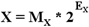

吉林大学远程教育学院—计算机原理及系统结构
浮点数在计算机内的格式

浮点数: X = MS ES Em-1 ...E1 E0 M-1M-2...M-n
IEEE 标准：阶码用移码，基为2
按国际电子电气工程师协会规定的国际通用标准，浮点数的阶码用整数给出，并且要用移码表示，用作为以 2为底的指数的幂。既然该指数的底一定为 2 ，可以不必在浮点数的格式中明确表示出来， 只需给出阶码的幂值即可。
只用于表示整数，只用在浮点数的阶码部分，其定义类似于整数的补码定义，差别在符号位。
移码的符号位是 0 表示负，1 表示正，与补码的符号位正好相反，移码是指机器数在数轴上有个移位关系；
移码的数值位则与补码的数值位完全相同。
浮点数格式：关于移码的知识

浮点数: X = MS ES Em-1 ...E1 E0 M-1M-2...M-n
移码表示只用于表示整数，只用在浮点数的阶码部分。
一位符号位和 n 位数值位组成的移码, 其定义为；
[E]移 = 2n + E -2n<=E<2n 表示范围： 00000000 11111111

浮点数格式：关于移码的知识
8 位的阶码能表示-128~+127，当阶码为-128时，其移码表示为 00000000，该浮点数的绝对值<2-128,人们规定此浮点数的值为零，若尾数不为 0 就清其为 0，并特称此值为
一位符号位和 n 位数值位组成的移码, 其定义为；
[E]移 = 2n + E -2n<=E<2n 表示范围： 00000000 11111111
8 位移码表示的机器数为数的真值在数轴上了 128 个位置

移码只执行二数的加减运算与增 1、 减 1 操作。加减运算时，符号位计算结果求反后, 才是加减运算的正确符号位的值。
浮点数算术运算
浮点数加减运算


（1）对阶操作，求阶差： ΔE= MX -MY，
使阶码小的数的尾数右移│ΔE│位，
其阶码取大的阶码值；
（2）尾数加减；
（3）规格化处理；
（4）舍入操作，可能带来又一次规格化；
（5）判结果的正确性，即检查阶码上下溢出
浮点数加运算举例
X=2010*0.1101111， Y=2100*（-0.1010110）
写出X、Y的正确的浮点数表示：
阶码用 4 位移码 尾数用 8 位原码
（含符号位 ） （含符号位 ）
[X]浮 = 1101111
[Y]浮 = 1010110
为运算方便，尾数的符号位写在数值位之前：
[MX]浮 = 0 1101111
[MY]浮 = 1 1010110
（1）计算阶差：

阶码计算结果的符号位在此变了一次反，结果为 -2 的 移码，是X的阶码值小，使其取 Y 的阶码值1100（即 +4）；
因此，相应地修改 [MX]补 =00 0011011（即右移 2 位）
（2）尾数求和：

此处是原码加法，符号不相同，绝对值大的减小的，结果符号取决于绝对值大的数
（3）规格化处理：
相加结果，数值的最高位为0，应执行1次左规操作,
故得 [MX]原 = 1 1110110，阶码减1，[EX]移 = 1 011
（4）舍入处理：结果为负，警戒位为正，在最低位减

（5）检查溢出否：和的阶码为 1011，不溢出
计算后的 [X]移 = 1110101 ，
即数的实际值为 23*(-0.1110101)
浮点数乘除运算


(1) 阶码加、减：乘：EX+EY ，除：EX- EY
(2) 尾数乘、除：乘：EX*EY ，除：EX / EY
(3) 规格化处理；
(4) 舍入操作，可能带来又一次规格化；
(5) 判结果的正确性，即检查阶码上下溢出
浮点数乘法运算举例
X=2010*0.1101111， Y=2100*（-0.1010110）
写出X、Y的正确的浮点数表示：
阶码用 4 位移码 尾数用 9 位原码
（含符号位 ） （含符号位 ）
[X]浮 =
[Y]浮 =
（1）阶码相加：

计算结果的阶码符号位在此变了一次反，
移码结果为 +6
（2）尾数相乘：MX*MY = 0.1011*(-0.1101)
= -0.10001111
(3) (4) (5) 已是规格化数, 不必舍入, 也不溢出
最终乘积 [MX]移 = 1 1110 10001111，
即 26 * （-0.10001111）
浮点数除运算举例
X=2010*0.1101111， Y=2100*（-0.1010110）
(1) 阶码相减：
积的阶码 = EX - EY = EX + (-EY)
= 1 010 + 0 100 = 0 110
注意：计算结果的阶码符号位在此变了一次反，为移码 -2
(2) 尾数相除：MX/MY = 0.1011/(-0.1101)
= -0.1101
(3) (4) (5) 已是规格化数, 不必舍入, 也不溢出
最终的商 [MX]移 = 11101，
即 2-2 *（-0.1101）
IEEE 浮点数标准 754

浮点数: X = MS ES Em-1 ...E2 E1 M-1M-2...M-n
IEEE 标准：阶码用移码，基为2；尾数用原码
| 符号位 | 阶码位 | 尾数数码位 | 总位数 | |
| 短浮点数: | 1 | 8 | 23 | 32 |
| 长浮点数: | 1 | 11 | 52 | 64 |
| 临时浮点数: | 1 | 15 | 64 | 80 |
正常的阶码值范围：01h~FEh，表示 -126~+127
特定的阶码：
00H，23位的非 0 尾数表示非规格化浮点数（隐藏位此时一定为0）；
FFH, 尾数为全 0 时表示无穷大的浮点数，可正可负，由符号位决定。尾数非全 0 时属于非法数值